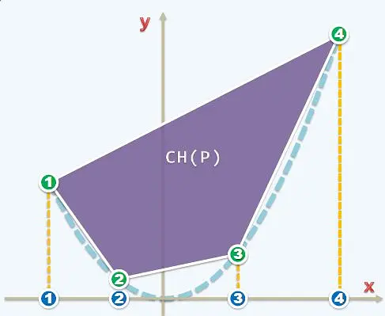
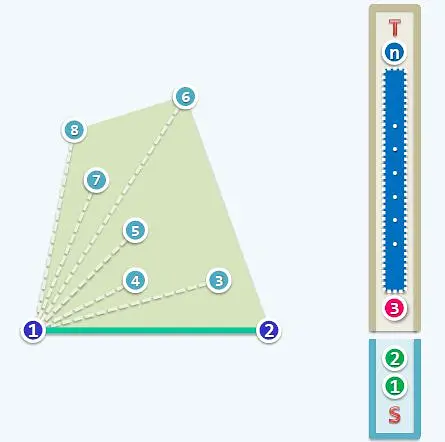
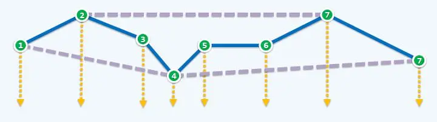
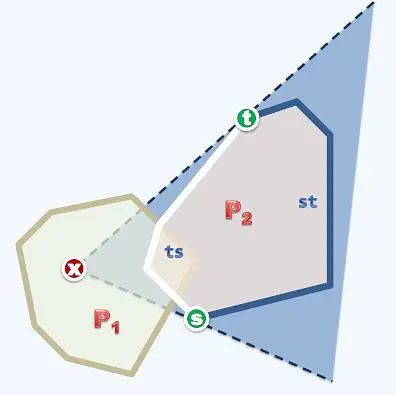
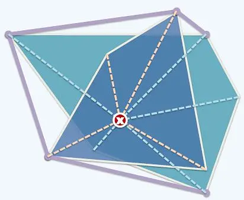
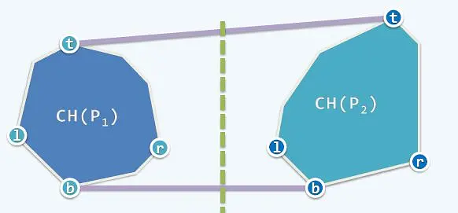
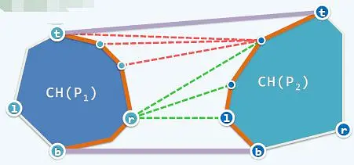

走向\(o(n\log n)\)复杂度
在上文中提到的四种算法中，算法三与算法四的时间复杂度达到了\(o(n^2)\)。不禁要问，是否存在更好的算法？答案是肯定的，可以证明，凸包问题的时间复杂度下限为\(o(n\log n)\)。
在介绍进阶算法之前，先来证明这个下界的存在性。设算法\(A\)为任意一种凸包算法，现在来考虑对序列\(a_1,a_2,...,a_n\)的排序问题。将这些点映射到抛物线\(y=x^2\)上，得到平面上\(n\)个点\((a_1,a_1^2),...,(a_n,a_n^2).\)应用算法\(A\)求解这\(n\)个点的凸包，显然这个凸包一定包含所有\(n\)个点。记凸包以最左边的点为起点，按照逆时针的排列数序为\((a_{1’},a_{1’}^2),...,(a_{n’},a_{n’}^2)\)，则\(a_{1'},...,a_{n'}\)就是最终的递增序列。另一方面，排序问题的下界是\(o(n\log n)\)，因此算法\(A\)的下界也是\(o(n\log n)\)，不然将算法\(A\)用来排序会得出矛盾。


除了展示极角排序结果外，图片中还有2个栈用来实现算法。初始时，将原点与排序后最小的点（两个点都一定是最终的极点）压入\(S\)栈，将其余点按从小到大顺序压入\(T\)栈，之后开始循环：
while T不空：
s1 = S.top(); S.pop() //取出S栈顶的两个点
s2 = S.top();
t1 = T.top();
if ToLeft(s2,s1,t1):
S.push(s1)
S.push(t1)
T.pop()
举个例子，4号点在23边的左侧，因此将它收入\(S\)；5号点在34边的右侧，说明4肯定不是极点，因此将其弹出\(S\)。这个循环扫点的过程就是算法名字中的\(scan\)。每次操作要么\(T\)弹出一个点，要么\(S\)弹出一个点，因此循环次数为\(o(n)\)。所以算法五总的时间复杂度为\(o(n\log n)\)。

最后，是两个分治算法。分治算法的本质都是把两个小凸包合并成为一个大的凸包。算法六与归并排序十分类似。如果以凸包的内点为原点，那么极点就是关于这个内点有序的。所以两个凸包可以看成是两个极角有序的序列，合并操作就是在做\(Merge\)。
因此理论上任何两个凸包经过\(Merge\)后都可以变成下图这种位置关系。此时再做一遍\(scan\)，花费\(o(n)\)的复杂度即可合并成功。
算法六需要讨论两个凸包的位置关系。如果事先对平面上所有点关于横坐标排序，这样可以保证应用分治策略时，需要合并的凸包可以用一条竖直线分隔开来。
合并这两个凸包，我们的实际操作是首先找到左边的子凸包的最右边的点，然后找到右边子凸包最左边的点（每次合并后更新凸包最左，最右的点，可以让这步只花费\(o(1)\)的复杂度），之后做\(ZigZag\)操作，找到两个凸包的公切线。这一步操作类似于快排，初始时连接\(rl\)，然后向上移动\(l\)，直到右边凸包端点的前驱后继都在这条线的一侧，再向上移动\(r\)。\(l\)与\(r\)不断切换，当二者都不能移动时，就找到了公切线，时间复杂度为\(o(n)\)。所以算法七的总复杂度为\(o(n\log n)\)。
到此，求解凸包已经有7个算法了，但是上面一切算法都是建立在理想条件下的，即没有重合点，没有三点共线。要解决这些退化情况，还需要加入一些特判，但是不会影响最终的复杂度。